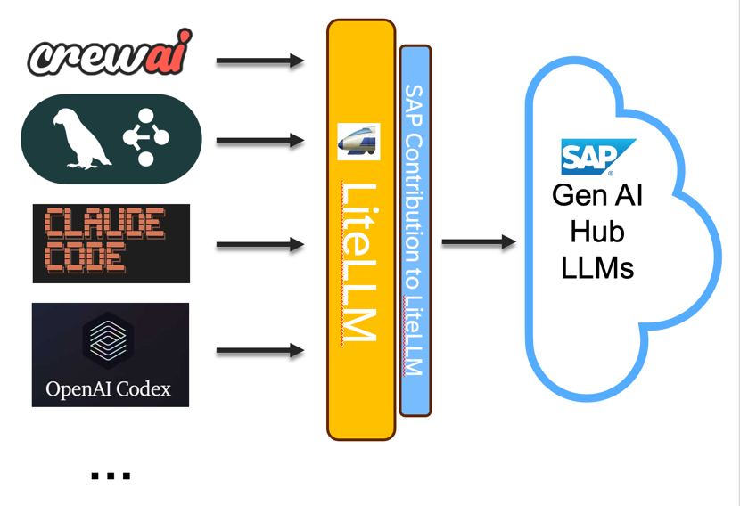

LiteLLM Agentic Examples for SAP Generative AI Hub
Build AI agents with SAP Generative AI Hub using your favorite open-source frameworks. This repository provides practical examples showing how to integrate popular agentic frameworks with SAP’s enterprise AI platform through LiteLLM.
What You’ll Find Here
This repository demonstrates how to:
Connect various open-source agent frameworks to SAP Generative AI Hub
Use both library-based and proxy-based integration approaches
Build production-ready AI agents with enterprise-grade LLM access
Leverage multiple LLM providers (OpenAI, Google, Amazon, Mistral, SAP, and more) through a single interface
Missing a framework? We welcome contributions! If you’d like to add an example for a framework not listed here, please open a pull request.
Understanding the Components
SAP Generative AI Hub
SAP Generative AI Hub is SAP’s enterprise platform for accessing large language models. It provides centralized access to LLMs from multiple providers including OpenAI, Google, Amazon, Mistral, and SAP’s own models, with built-in governance, security, and compliance features.
LiteLLM
LiteLLM is an open-source library that provides a unified interface for 100+ LLM providers. It translates requests into provider-specific formats, allowing you to use any LLM with a standardized OpenAI-compatible API.
The Integration
Most open-source agent frameworks are designed to work with OpenAI’s API. LiteLLM acts as a bridge, translating OpenAI-style requests to work with SAP Generative AI Hub. This means you can use any framework that supports OpenAI with SAP’s enterprise LLM platform, without modifying the framework’s code.

Framework Support Overview
The following table shows which frameworks are included in this repository, their integration methods, and example notebooks:
Framework |
Description |
Library |
Proxy |
Notebook Examples |
|---|---|---|---|---|
LangGraph |
Low-level orchestration framework for building stateful, multi-agent applications using graph-based control flow with cyclic capabilities. Trusted by companies like Klarna, Replit, and Elastic for production deployment with built-in debugging via LangSmith. |
✓ |
✓ |
|
CrewAI |
Lean Python framework built from scratch for creating autonomous AI agents with role-based architecture. Features high-level simplicity with low-level control, supporting 100,000+ certified developers and claiming 5.76x faster execution in certain cases. |
✓ |
✓ |
|
PydanticAI |
Type-safe agent framework by the Pydantic team with sophisticated dependency injection, durable execution for long-running workflows, and automatic self-correction where validation errors enable real-time learning from mistakes. Supports MCP and A2A protocols. |
- |
✓ |
|
Google ADK |
Flexible, model-agnostic framework powering agents in Google products like Agentspace. Supports Python, Go, and Java with workflow agents for predictable pipelines, pre-built tools, and MCP tools integration optimized for Gemini and the Google ecosystem. |
✓ |
✓ |
|
OpenAI Agents SDK |
Lightweight, production-ready Python framework with minimal abstractions, featuring four core primitives: agents, handoffs, guardrails, and sessions. Provider-agnostic supporting 100+ LLMs with automatic Pydantic-powered schema generation and built-in tracing. |
✓ |
✓ |
|
AWS Strands |
Model-driven SDK taking advantage of state-of-the-art models’ capabilities to plan and execute. Used in production by AWS teams including Amazon Q Developer and AWS Glue, with support for thousands of MCP servers and multi-agent primitives including A2A protocol. |
✓ |
✓ |
|
LlamaIndex |
Data orchestration framework with enterprise-grade document parsing supporting 90+ file types. Features event-driven Workflows for multi-step agentic systems and 300+ integration packages working seamlessly with various LLM, embedding, and vector store providers. |
✓ |
✓ |
|
smolagents |
Minimalist framework by Hugging Face with ~1,000 lines of core code, specializing in code agents that write and execute Python snippets. Features sandboxed execution environments and achieves ~30% reduction in LLM calls compared to standard tool-calling methods. |
✓ |
✓ |
|
Microsoft Agent Framework |
Comprehensive .NET and Python framework combining AutoGen’s abstractions with Semantic Kernel’s enterprise features. Introduces graph-based architecture with workflows for explicit control, checkpointing for long-running processes, and comprehensive monitoring integration. |
- |
✓ |
|
AgentScope |
Agent-oriented framework with native asynchronous execution support for realtime interruption and customized handling. Prioritizes transparency with no deep encapsulation, making all operations visible and controllable. Includes AgentScope Studio for visual multi-agent system management. |
✓ |
✓ |
|
AG2 |
Open-source framework (formerly AutoGen) with open governance under AG2AI organization. Features core agents like ConversableAgent for seamless communication, supports multi-agent conversation patterns, and introduces FSM/Stateflow for structured state management. |
- |
✓ |
Integration Types
Library Integration: Uses LiteLLM as a Python library directly in your code. The framework calls LiteLLM functions, which handle the communication with SAP Generative AI Hub.
Proxy Integration: Runs LiteLLM as a standalone server that mimics the OpenAI API. Your framework connects to this local proxy server, which forwards requests to SAP Generative AI Hub. This approach enables multi-language support.
Getting Started
Prerequisites
SAP AI Core with Generative AI Hub subscription via SAP BTP tenant
Python 3.10 or higher
LiteLLM library (latest version includes SAP provider support)
Note: While Python 3.10+ is supported, Python 3.14 or higher is recommended for optimal performance and compatibility.
Installation
pip install litellm
For proxy-based integration:
pip install "litellm[proxy]"
Basic Workflow
Set up credentials: Obtain your SAP AI Core service key from your BTP tenant
Choose integration method: Decide between library or proxy approach based on your needs
Configure connection: Set up LiteLLM with your SAP credentials
Select a framework: Choose from the examples below
Build your agent: Follow the notebook examples to create your AI agent
Running LiteLLM as a Proxy
The proxy approach runs LiteLLM as a standalone server, making it accessible to any application that can make HTTP requests. This is particularly useful for multi-language support (e.g., JavaScript, Go) and microservices architectures.
The proxy mimics the OpenAI API, allowing any OpenAI-compatible client to connect to SAP Generative AI Hub by pointing it to the local proxy URL.
For detailed instructions on configuring and running the proxy, including Docker setup, please see the LiteLLM Proxy Setup Guide.
Multi-Language Support
Because LiteLLM can run as a proxy server with an OpenAI-compatible API, you’re not limited to Python. Any language that can make HTTP requests can use SAP Generative AI Hub through the LiteLLM proxy.
JavaScript/TypeScript Example
Here’s how to use LangChain.js with the LiteLLM proxy:
import { ChatOpenAI } from "@langchain/openai";
const model = new ChatOpenAI({
modelName: "sap/gpt-4",
openAIApiKey: "sk-1234", // Your proxy master key
configuration: {
baseURL: "http://localhost:4000", // LiteLLM proxy URL
},
});
const response = await model.invoke("Hello, how are you?");
console.log(response.content);
Learn more with our JavaScript/TypeScript examples.
Contributing
We welcome contributions! If you’d like to add an example for a framework not listed here:
Fork the repository
Create a new directory following the naming pattern:
framework_name_example/Include both a Jupyter notebook and Python script
Add clear documentation explaining the integration
Update this README with your framework in the comparison table
Submit a pull request
Additional Resources
Note for Maintainers
Cleanup Notebooks Before Commit
Clear cell outputs and metadata using the .pre-commit-config.yaml.
Installation:
python3 -m venv env
source env/bin/activate
python3 -m pip install pre-commit nbstripout
Manual run:
pre-commit run --all-files
Skip hooks temporarily:
git commit -m "Message" --no-verify
Update Documentation via Sphinx
The documentation is automatically built and deployed via GitHub Actions on each push to the main branch. To build the documentation locally, follow the instructions in our Documentation Setup Guide.
Agent Framework Examples:
- Langgraph example connecting to Sap Generative AI Hub via LiteLLM
- CrewAI example connecting to Sap Generative AI Hub via LiteLLM
- CrewAI Proxy example connecting to Sap Generative AI Hub via LiteLLM
- PydanticAI example connecting to Sap Generative AI Hub via LiteLLM
- Google ADK example connecting to Sap Generative AI Hub via LiteLLM
- OpenAI ADK example connecting to Sap Generative AI Hub via LiteLLM
- AWS Strands Agents example connecting to Sap Generative AI Hub via LiteLLM
- LlamaIndex example connecting to Sap Generative AI Hub via LiteLLM
- Smolagents example connecting to Sap Generative AI Hub via LiteLLM
- Microsoft Agents example connecting to Sap Generative AI Hub via LiteLLM
- AgentScope example connecting to Sap Generative AI Hub via LiteLLM
- AG2 example connecting to Sap Generative AI Hub via LiteLLM Proxy
- LiteLLM Proxy Setup Guide
- JavaScript/TypeScript Examples